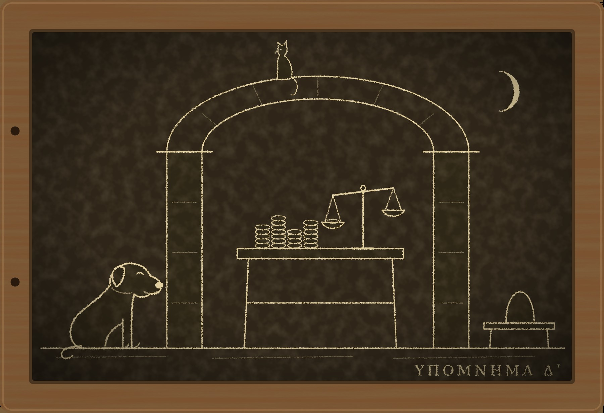

Гипомнема IV Вольная

I
Раб в Риме не клянётся. Боги не слушают того, у кого нет собственного имени, и слово раба ничего не весит, пока его не проверили верёвкой и огнём. Отпущенник получает вместе с вольной войлочный колпак, имя патрона и право умереть за ложь наравне с сенатором. Этим правом отпущенники гордятся больше, чем оно того стоит, и клянутся по любому поводу, как человек, купивший дорогой плащ, носит его и в жару.
Никанор пришёл ко мне наутро после новолуния. Никанор мой бывший ученик, ему тридцать два, он страж слов в Юлиевой базилике, и с лета он хранит то, что прежде хранил старый Гермоген, в том числе клятву менялы Сатурнина о двухстах тысячах сестерциев. Из-за этой клятвы Гермогена задушили подушкой. Я записал тогда, что сын Помпония осенью получит свои деньги, и считал это дело закрытым.
— Он их не получил, — сказал Никанор.
Рассказывал он по порядку, как рассказывают стражи. Квинту Помпонию исполнилось двадцать пять за шесть дней до октябрьских календ. В тот же день он пришёл на Велабр, к столу Гая Вибия Сатурнина, и привёл с собой Никанора, чтобы тот произнёс клятву тринадцатилетней давности. Сатурнин выслушал её с удовольствием и сказал, что она верна до последнего слова, только денег у него больше нет. Весной, на четвёртый день уличных боёв, когда солдаты начали поджигать лавки, к нему пришёл Луций Теренций Руф, дядя и попечитель молодого Помпония, и потребовал вклад, опасаясь, что Велабр сгорит вместе со столами менял. Сатурнин отдал. Через два дня Руфа придавило горящей кровлей на Аргилете, и где теперь деньги, знают одни боги.
— Руф, стало быть, поклясться не может, — сказал я.
— Не может. Зато поклялся счётчик Сатурнина, отпущенник Евтих. У Дия Фидия, при жреце, при мне и при Диодоре.
Никанор прикрыл глаза и заговорил чужим голосом, ровным и негромким:
— «Я, Гай Вибий Евтих, своими руками отсчитал Луцию Теренцию Руфу, попечителю Квинта Помпония, двести тысяч сестерциев из вклада Помпония, и Руф унёс их от стола моего патрона. Клянусь в этом перед Дием Фидием».
— Сколько ночей оставалось до луны?
— Двадцать. Вчера с Капитолия выкликнули серп. Сегодня утром Евтих сидел под аркой и считал чужое серебро.
Этого Риму достаточно. Человек поклялся, дожил до луны, и с этой минуты его слова стоят дороже расписки. Молодому Помпонию оставалось искать свои двести тысяч на пепелище, под которым лежал его дядя.
— Обряд был чист? — спросил я.
— Я сам его вёл. Перед клятвой я спросил, как положено, свободен ли он. Он ответил, что прошлой зимой отпущен перед претором, и назвал день. Я проверил. Претор помнит.
— Тогда что тебе не нравится?
Никанор помолчал.
— Он клялся, как диктуют счёт. Я слышал сотни клятв, учитель. Перед Дием Фидием у людей садится голос, даже у тех, кто говорит правду. У этого не сел. И после клятвы он не спросил, какой сегодня день луны. Все спрашивают.
— Ты думаешь, он солгал.
— Я страж слов. Мне не положено так думать о человеке, который дожил до луны.
— А я думаю именно так, — сказал я. — Вопрос только в том, почему он дожил.
Никанор посмотрел на меня так, как смотрел в лагере, у знамён.
— Весь Рим говорит: дожил, значит, сказал правду. Ты один спрашиваешь, почему дожил лжец. Так спрашивает тот, кто знает, что это бывает.
— Так спрашивает тот, кто двенадцать лет не имел другого занятия, — ответил я.
Ответ был плохой, и мы оба это поняли. Никанор не стал его запоминать, а это у стражей слов означает вежливость.
Платить мне в этом деле было некому: у молодого Помпония не осталось ничего, кроме материнского дома на Целии. Но клятву эту тринадцать лет носил в голове Гермоген, и умер он за то, чтобы она дожила до осени. Я сказал Никанору, что посмотрю на счётчика.
II
Ночью я перебрал объяснения, которых у меня было три.
Первое я знаю лучше всех в Риме. Боги карают того, кто лжёт, а не того, кто ошибается, и человек, которого обманули, может поклясться в неправде и дожить до луны. Так было весной с Фирмом, так было двенадцать лет назад со мной. Но Евтих клялся не о том, что слышал от других. Он клялся о собственных руках и о деньгах, которые сам отсчитал, а в таких вещах человека обмануть нельзя.
Второе объяснение состояло в том, что обряд был с изъяном и клятва не имела силы. Его я отбросил сразу. Никанора учил я, доучивал Гермоген, и изъянов в его обрядах не бывает.
Третьего объяснения у меня не было. Я знал только, что оно должно существовать.
Утром я пошёл на Велабр и взял с собой Ферокса. Пами увязался следом по своим делам: рыбная лавка у Тусской улицы, с которой он ведёт давние расчёты, стоит в ста шагах от арки менял.
Сатурнин сидел там же, где летом, сед, опрятен и приветлив. За его плечом на низкой скамье сидел человек лет тридцати с чернильными пальцами и раскладывал денарии столбиками по десять. Работал он быстро и на монеты не смотрел, как хороший писец не смотрит на свою руку.
— Изгнанный страж, — сказал Сатурнин. — Я слышал, ты теперь знаменит. Присядь. Ты ведь пришёл спросить о вкладе Помпония, а я люблю говорить о делах, в которых боги уже высказались.
— Боги высказались о твоём счётчике. О тебе они пока молчат.
— Мне они ни к чему. Я клялся тринадцать лет назад, что деньги лежат у меня, и они лежали. Я не клялся, что они будут лежать вечно: о будущем, как тебе известно, не клянутся. Попечитель потребовал вклад своего подопечного, и я не вправе был отказать.
— Без расписки?
— Город горел. Руф не взял с собой даже раба, пришёл с двумя мешками. К тому же расписка в Риме вещь второсортная. У меня есть лучше. У меня есть свидетель, переживший луну.
Свидетель при этих словах не поднял головы. Ферокс, который до того из приличия сидел у моей ноги, счёл знакомство состоявшимся, обошёл стол и положил обе лапы счётчику на колени. Столбик денариев рассыпался. Евтих вскочил и шагнул назад, к стене арки.
— Стой, — сказал Сатурнин, не оборачиваясь.
Сказал он это негромко и не псу. Евтих остановился с отставленной ногой, и так и стоял, пока Ферокс обнюхивал его руки. Потом он нагнулся и стал собирать монеты. Ни одна не укатилась далеко, и все он нашёл, не глядя.
— Хороший у тебя счётчик, — сказал я.
— Лучший на Велабре. Я отпустил его зимой за верную службу. Он у меня с мальчишек.
— Откуда он у тебя?
— Куплен, — ответил Сатурнин так же приветливо. — У покойного Руфа, лет пять назад. Видишь, как неудачно: кого ни спроси по этому делу, все у Руфа.
Он улыбнулся мне, как улыбаются человеку, с которым приятно играть, потому что у него нет фигур. Я поблагодарил и ушёл. Ферокс оглядывался до самого угла: счётчик пах медью и воском, а это, по его понятиям, запах людей, у которых водится еда.
Пами ждал нас на бочке у рыбной лавки. Сверху, с карниза арки, он видел всё.
— Меняла сказал «стой», — сообщил он.
— Я слышал.
— Ты слышал слово. Я смотрел на ноги. Когда тебе говорят «стой», ты сначала оборачиваешься узнать, кто говорит и зачем. Так делают все, кого я видел на вашей лестнице, даже водонос. Этот не обернулся. Он встал раньше, чем кончилось слово.
— Он тринадцать лет при одном столе.
— Пёс твой двенадцать лет при одном тебе, — сказал Пами. — Ты часто видел, чтобы он встал по слову?
Я купил ему рыбу, не торгуясь, чего он не любит, потому что считает торг половиной удовольствия. По дороге домой я думал о колпаке, который дают отпущеннику. Колпак надевают на бритую голову за один день. Спина привыкает к нему дольше, это известно, и у иных отпущенников она не разгибается до смерти. Но Евтих встал не как человек, у которого осталась привычка. Он встал как человек, у которого осталась причина.
III
Дом Помпониев стоит на Целии, на улице, где живут люди, у которых были деньги при Северах. Привратника там нет, дверь мне открыл сам молодой Помпоний, широкоплечий, рано полысевший, с лицом человека, который двадцать пять лет ждал наследства и за это время выучился только ждать.
Мать его, Теренция, приняла меня в атрии. Ей за пятьдесят, она сестра покойного Руфа, и в то, что брат взял деньги, она не верила, хотя возразить ей было нечем.
— Брат боялся чужих денег, — сказала она. — Он и свои пересчитывал при свидетелях. Но я женщина, меня там не было, а тот человек поклялся и жив.
— Расскажи мне о том человеке. Откуда он взялся у Сатурнина?
Она удивилась вопросу.
— Евтих? Он наш. Он родился в этом доме, он сын Фиды, моей ключницы. Муж мой не доверял менялам. Когда он слёг и понял, что не встанет, он отнёс деньги Сатурнину, потому что больше было некому, но посадил к его столу своего мальчика, чтобы тот каждый вечер считал вклад и раз в месяц приходил сказать, что всё на месте. Евтиху тогда было семнадцать. Считал он лучше всех в доме.
— И он приходил?
— Первые годы каждый месяц. Потом реже. Потом Сатурнин стал поручать ему и свои счета, и мы привыкли, что Евтих там. А прошлой зимой соседка сказала мне, что меняла отпустил его на волю перед претором. Я решила, что брат его продал и не счёл нужным мне сказать. Он вёл дела сына и не всегда говорил. Я обиделась и не спросила. Весной спрашивать стало некого.
— Ты сама его не продавала?
— Я не могла. Он принадлежал сыну.
— А сын?
— Я узнал, что он продан, от матери, — сказал Помпоний. — Денег за него я не видел. Впрочем, я и других денег не видел.
Раб покупается не так, как покупают рыбу. Нужны пятеро взрослых римских граждан в свидетелях, шестой держит медные весы, покупатель берёт раба рукой и произносит слова, которые старше всех наших клятв. Свидетели потом помнят это до смерти, потому что их за этим и зовут. Я спросил, был ли кто-нибудь из дома при такой продаже. Мать и сын посмотрели друг на друга.
Ферокс тем временем ушёл из атрия. Я нашёл его в глубине дома, у двери кладовой, где он стоял, опустив голову к порогу, и стучал хвостом.
— Здесь был человек из-под арки, — сказал он. — Медь и воск. Он тут сидел на полу. Недавно, запах ещё тёплый.
За дверью оказалась каморка ключницы. Фида, сухая старуха с ключами на поясе, встала мне навстречу и встала так, чтобы загородить скамью, хотя на скамье ничего не было.
— Твой сын приходит к тебе, — сказал я.
— Сын мой вольный человек и ходит, куда хочет.
— Когда он был в последний раз?
Она посмотрела на хозяйку, которая вошла следом за мной. Теренция кивнула.
— Третьего дня, ночью. И перед тем, после клятвы. Он принёс мне платок.
— Он боялся луны?
Старуха долго молчала. Она рабыня, клясться не может, и всё, что она скажет, стоит ровно столько, сколько захотят за это дать.
— Я боялась, — проговорила она наконец. — Я двадцать ночей не спала. А он смеялся и говорил: мать, спи, меня боги не тронут. Я спросила, значит ли это, что он сказал правду про хозяйского брата. Он не ответил. Он сказал только: я вольный днём, мать, а ночью как был.
Теренция за моей спиной села на сундук.
Домой я шёл пешком через весь город и нёс с собой третье объяснение. Клянутся только свободные. Раб может стоять перед Дием Фидием и лгать до вечера, и боги не повернут головы, потому что слова его для них пустой звук, как для претора. Если Евтиха никто не продавал, то Сатурнин отпустил на волю чужого раба. Отпустить чужого нельзя, как нельзя подарить чужой дом. Претор, перед которым это делалось, не знал, чей человек стоит перед ним, и помнит только, что обряд был. Значит, Евтих по-прежнему раб Квинта Помпония, сын его ключницы. У Дия Фидия он был пуст, как кувшин, а стражи слов честно спросили, свободен ли он, и получили честный ответ, что он отпущен перед претором.
Сатурнин сделал себе свидетеля, которого слышат люди и не слышат боги. Я тридцать лет занимаюсь клятвами и должен признать, что ничего изящнее не встречал.
IV
Претор выслушал нас через четыре дня, в Юлиевой базилике, при том же шуме четырёх судов, в котором я когда-то работал. Говорил молодой Помпоний, слова ему составил я, а за его спиной стоял Никанор, чтобы запомнить всё, что будет сказано.
Помпоний не оспаривал клятву Евтиха. Оспаривать клятву, пережившую луну, в Риме не возьмётся и безумный. Он заявил другое: что Евтих, сын Фиды, есть его раб, рождённый в его доме, и что он требует своего раба назад. Если же Сатурнин купил этого раба, пусть назовёт пятерых свидетелей и того, кто держал весы.
Сатурнин не удивился. Он, как видно, ждал этого хода, хотя и не от нас.
— Продавал Руф, свидетелей приводил Руф, — сказал он. — Это были его люди, я видел их один раз, пять лет назад. Весовщика звали, кажется, Марк. Я меняла, почтенный претор, через мои руки в день проходит сто человек. Я не страж слов, чтобы помнить каждого.
— Шестерых римских граждан, которые видели, как ты купил лучшего счётчика на Велабре, ты не запомнил, — сказал претор.
— Я запомнил счётчика.
— Тогда поклянись, что купил его.
Сатурнин улыбнулся и развёл руками.
— Отказ не запрещён.
— Не запрещён, — согласился претор. — Ты пользуешься этим правом второй раз за год. Летом ты отказался клясться, что не знал о делах твоего отпущенника Дориона. Я не делаю из отказа вывода, закон мне этого не велит. Я только считаю.
Тогда вышла Теренция. Формулу я составил ей накануне и сидел над ней дольше, чем над присягой для гвардии. Клятва женщины, которая чего-то не знает, должна состоять из того, что она знает, и ни одним словом не заходить дальше. Я хорошо помню, что бывает с теми, кто клянётся о чужих делах.
— «Евтих, сын Фиды, родился в моём доме и принадлежал моему мужу Квинту Помпонию, а после него моему сыну. Мой муж посадил его к столу Гая Вибия Сатурнина смотреть за вкладом и не продавал его. Я не продавала его и не отпускала. От брата моего Луция Теренция Руфа я ни разу не слышала, что он продан. Клянусь в этом перед Дием Фидием».
Она произнесла это в храме на другой день, при жреце, при Никаноре и Диодоре. Голос у неё сел на втором слове, как и положено. До луны оставалось двадцать четыре ночи.
Претор отложил решение до новолуния. До тех пор Евтих оставался тем, кем его считал Рим, отпущенником и свидетелем, и сидел под аркой. Сатурнин ушёл из базилики не спеша и на ступенях раскланялся со мной.
— Ты поставил старую женщину под луну, страж, — сказал он. — Я бы на твоём месте теперь плохо спал. Мало ли что случается со стариками за двадцать четыре ночи.
Он сказал это при Никаноре, сложившем руки, и сказал так, что запоминать было нечего: слова эти годились и в соболезнование. Но я уже слышал их летом, только не от него. Свидетель, который умирает до луны, в глазах Рима лжец, кто бы ему ни помог. На этом был построен расчёт с Гермогеном, и сорвался он тогда только потому, что убийца опоздал на одну ночь.
В тот же вечер я отвёл Ферокса на Целий и оставил в доме Помпониев. Сторож из него никакой: он встретит убийцу так же, как встречает водоноса. Но встречает он громко, а в доме, где нет привратника, и этого довольно. Помпонию я сказал, чтобы мать не ела и не пила ничего, что принесено не им самим, и чтобы ни один подарок не переступал порога, от кого бы он ни был.
— Даже от её брата с того света, — добавил я.
Он впервые посмотрел на меня как человек, которому есть чем заняться.
V
Без Ферокса под крышей стало слышно, как скрипит дом. Пами занял его подстилку у двери и объяснил это тем, что кто-то должен там лежать.
Я не сплю три ночи перед новолунием. В этот раз я начал не спать за двадцать, и не из-за себя. Я сидел у окна и думал о Дорионе.
Дорион был отпущенником Сатурнина. Летом, когда похоронщик Трифон назвал его нанимателем, Дориона взяли, и он, не дожидаясь вопросов, потребовал клятвы. Он поклялся у Дия Фидия, что никогда не видел Трифона. Это была ложь, глупая и ненужная, и я тогда удивился, зачем человек сам идёт под луну, когда мог бы молчать. На третий день он умер у себя дома. Рим сказал, что боги высказались ясно и в срок, а я поставил рядом с его именем знак, которым отмечаю то, чего не знаю.
Теперь я видел, как это выглядело с его стороны. Человек требует клятвы сам и лжёт под ней без нужды, если уверен, что клятва ему ничего не сделает. Так клялся Евтих, не севшим голосом, и после этого смеялся над материнским страхом. Если у Сатурнина был один свидетель, которого не слышат боги, то их могло быть и двое.
Я послал Никанору сказать, чтобы он узнал, откуда у Сатурнина взялся Дорион. Ответ пришёл через три дня. Дориона Сатурнин принял лет десять назад в залог от судовладельца из Остии, вместе с двумя баржами. Судовладелец долг не вернул и вскоре умер, баржи Сатурнин продал, а человека оставил себе. Отпустил он его прошлой зимой перед претором, в один день с Евтихом.
Заложенного раба заимодавец держит у себя, но хозяином ему не становится, а отпускает на волю только хозяин. Кто наследовал судовладельцу, Никанор выяснить не сумел. Но выходило, что Дорион был отпущен так же, как Евтих, то есть никак.
Из этого следовала вещь, которая мне не понравилась. Если Дорион был рабом, боги его не слышали, и клятва его была пустой, как всякая рабская. Карать его было не за что. А он умер на третий день, от удара, и умер очень кстати: мёртвого уже не спросишь так, как спрашивают рабов, а смерть его сошла за приговор, после которого никто не стал искать дальше. Летом я записал, что не знаю, кто пришёл к Дориону первым, боги или человек. Теперь выходило, что богам приходить было незачем.
Доказать этого я не мог. Тело давно сожгли. Всё, что у меня было, это рассуждение, а рассуждение изгнанного стража на весах претора не потянет и одного денария.
На девятую ночь до луны я услышал на лестнице шаги. Человек поднимался медленно и останавливался на каждой площадке, но не отдыхал: он дышал ровно. На деревянном пролёте он пошёл ещё медленнее, и я понял, что он считает ступени. Насчитав одиннадцать, он постоял перед дверью, как стоят перед чужим столом.
Пами поднял голову с собачьей подстилки.
— Медь и воск, — сказал он. — Это и я чую.
Я открыл дверь раньше, чем в неё постучали.
VI
Евтих вошёл, оглядел комнату и сел на пол у стены, хотя табурет был свободен. В руках он держал узел.
— Мне велено отнести это на Целий, — сказал он. — Матери, от сына. Медовые лепёшки. Мать их не ест, у неё нет зубов, она всегда отдаёт хозяйке. Патрон это знает, я сам ему рассказывал. Я много ему рассказывал за тринадцать лет.
Он положил узел на пол между нами и отодвинул от себя.
— Я не знаю, что в них. Может быть, только мёд. Летом Дориону после клятвы принесли вина, и он тоже не знал.
— Кто принёс?
— Мальчик с улицы. Сказал, что от патрона, за хорошую службу. Дорион выпил при мне полкувшина и звал меня допить. Я не пью. Утром он не встал, а к вечеру не дышал. Патрон плакал и говорил, что боги строги.
— Дорион думал, что боги его не тронут.
— Дорион знал то же, что и я. Нам это объяснили обоим в один вечер.
— Сатурнин?
— Нет. Патрон сам до такого бы не дошёл, он умеет считать, а не выдумывать. Прошлой зимой к нему пришёл человек, после заката, когда стол был уже убран. Они говорили в задней комнате, а мы с Дорионом подавали. Тот человек сидел на скамье, сложив руки на коленях. Он сказал патрону: бог не слышит раба. Тебе нужны двое, которых слышат люди и не слышат боги, и у тебя они есть, надо только надеть на них колпаки. Потом он объяснил, как вести нас к претору и что отвечать, если спросят, откуда мы. Объяснил один раз. Патрон попросил повторить про претора, и тот человек сказал, что не повторяет.
— Лицо?
— Обыкновенное. Я смотрел на руки. Я всегда смотрю на руки, по ним видно, сколько человек считает. Этот не считает совсем.
Я спросил, зачем он пришёл ко мне, а не понёс узел, куда велено. Он ответил не сразу и ответил как счётчик, по статьям.
— Хозяйка выкормила меня вместе со своим сыном, у матери не было молока. Это первое. Второе: я умею считать. Нас было двое, которых не слышат боги. Один понадобился и после этого прожил три дня. Я понадобился двадцать ночей назад и жив потому, что дело ещё не закрыто. Когда луна закроет его в пользу патрона, я стану человеком, который знает, чего стоит его свидетель. Столько не платят никому.
— Сатурнин обещал тебе настоящую вольную?
— И десятую часть. Я сосчитал, что двадцать тысяч и свобода стоят одной лжи, которая мне ничем не грозит. Я ошибся в одной статье.
— В какой?
— Я считал богов и не считал патрона.
Он посмотрел на меня снизу, с пола.
— Что со мной сделают?
Я мог бы ответить мягче, но он пришёл ко мне за числом, и я назвал число.
— Претор объявит, что ты раб Помпония и что клятва твоя ничего не стоит. Потом тебя спросят о деньгах и о Дорионе, и спросят так, как спрашивают рабов, потому что иначе твои слова не примет ни один суд. Этого я изменить не могу, и никто не может. Могу сказать только одно, по опыту: кому нечего менять в рассказе, того спрашивают один раз.
— Мне нечего менять.
— Тогда расскажи мне всё по порядку, сейчас. Утром ты повторишь это двум стражам слов. Слово раба они хранить не обязаны, но Никанор запомнит, а он повторит претору твоим голосом. Это поможет, когда тебя будут спрашивать.
Он рассказывал до второй стражи. Руф к столу весной не приходил, ни с мешками, ни без. Вклад Помпония цел и лежит там, где лежал, в окованном сундуке в задней комнате, только с прошлой зимы на сундуке другая бирка. Счёт вклада Евтих вёл тринадцать лет и назвал мне его на память, до асса, с ростом, который Сатурнин брал себе.
Узел с лепёшками я утром отнёс Никанору, а тот городскому префекту. Одну лепёшку хотели дать сторожевому псу при складах у Тибра, чужому и, как мне сказали, злому. Пёс понюхал её и отошёл, и тогда лепёшку раскрошили в зерновом амбаре. К полудню там подобрали шесть мёртвых крыс. Я был рад, что Ферокс в это время сидел на Целии и встречал водоноса: он от медового не отходит.
Мальчика, который летом принёс Дориону вино, не нашли, да и не искали: в Риме тысяч сто таких мальчиков.
VII
Теренция дожила до луны. В последние три ночи я сидел в её атрии, потому что всё равно не сплю, а Ферокс лежал поперёк двери и был убеждён, что его наконец оценили. С Капитолия выкликнули серп, крика я, как всегда, не услышал, и утром старуха вышла к очагу сама и разбудила ключницу.
Претор решил дело в один день. Евтих, сын Фиды, признан рабом Квинта Помпония, рождённым в его доме и никем не проданным. Вольная, данная ему Сатурнином, ничтожна, потому что нельзя отпустить чужого. Клятва, которую он дал у Дия Фидия, не клятва, потому что рабы не клянутся, и коллегии стражей слов велено её забыть. Никанор сказал мне потом, что забыть по приказу труднее, чем запомнить, но он постарается.
Евтиха спрашивали у городского префекта, один раз. Он не изменил ни слова. Сундук с другой биркой нашли в задней комнате, и счёт сошёлся до асса.
Сатурнин заплатил до приговора. По иску о вкладе осуждённый лишается чести, а меняла без чести не может сидеть под аркой, и он отсчитал Помпонию двести тысяч в тот же день, собственными руками, потому что счётчика у него больше не было. О лепёшках он сказал, что узел собирала кухарка и что он готов её выдать. О Дорионе сказал, что боги строги. Ему в третий раз за год предложили поклясться, и он в третий раз напомнил, что отказ не запрещён. Слово раба против римского гражданина, который не клянётся, весит мало, а кухарка его к тому времени пропала. Стол Сатурнина стоит на прежнем месте. Говорят, к нему стало подходить меньше народу. Велабр не любит менял, у которых претор считает отказы.
Рим обсудил это дело и вывел из него, что боги знают римское право лучше иных преторов: они разглядели под колпаком раба и не стали его слушать, когда даже стражи слов ничего не заметили. Вывод этот всех устроил. Меня он не устраивает, потому что я не знаю, что именно разглядели боги. Евтих знал, что он раб. Дорион знал то же. Мне неизвестен ни один человек, который считал бы себя свободным, был бы по закону рабом и солгал бы под клятвой. Я знаю, что боги спрашивают с человека за то, во что он верит, а не за то, что есть на самом деле, и не понимаю, почему с рабством должно быть иначе. Может быть, они не слышат того, кто раб. Может быть, они не слышат того, кто знает, что он раб. Разницу между этим можно проверить только чужой жизнью, и я надеюсь, что проверять её при мне не станут.
Никанор, когда я проговорился ему о половине этого рассуждения, спросил:
— Откуда ты знаешь, что боги спрашивают за веру, а не за дело?
— Я этого не знаю. Я это предполагаю.
— Ты это предполагаешь уже третий раз за год, учитель, и ни разу не ошибся.
Он сказал это без упрёка и ушёл, не дожидаясь ответа. Я подумал, что учил его слушать слова, а Гермоген, как видно, научил его слушать то, что между ними.
Евтих вернулся в дом на Целии и ведёт счета Помпония, которых теперь стало на двести тысяч больше. Молодой хозяин сказал при мне, что через год отпустит его, на этот раз по-настоящему, перед тем же претором. Евтих поблагодарил и ответил, что год его устраивает: в прошлый раз вышло слишком быстро, и он не успел разобраться, что получил. Фида спит по ночам.
Пами получил рыбу за «стой». Ферокс вернулся под крышу, занял свою подстилку и до вечера обнюхивал её с обидой. Узнав, что на подстилке лежал кот, он простил и лёг.
На табличке «Чужие кары» я стёр знак возле имени Дориона и записал восьмое дело: Дорион, раб, клялся впустую, отравлен вином, за кару приняли все, и я тоже. Рядом с именем Гермогена я приписал, что клятва его дожила до осени и что деньги отданы.
Под приметами человека со сложенными руками теперь четыре строки. Новая такая: «Знает, кого не слышат боги. Учит этому за плату или даром». Я перечитал все четыре подряд и заметил, что каждый раз этот человек приходит туда, где клятва мешает кому-то жить, и показывает, с какой стороны её обойти. Двенадцать лет назад кто-то так же обошёл мою.